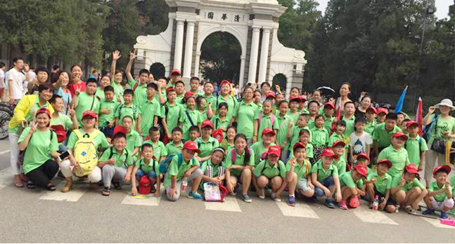
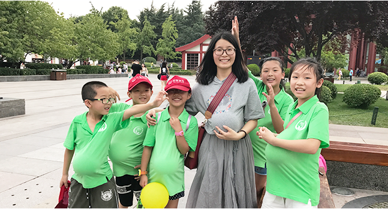

“播种一种行为，收获一种习惯；播种一种习惯，收获一种性格；播种一种性格，收获一种命运。”基于这种理论，全国晋级教育连锁机构历经三年研发出了飞智力因素培养之好习惯特训营体系，旨在在一个人最容易养成习惯的年龄段，通过一系列的训练，改掉让服务头疼、孩子受困的坏毛病，养成乐观开朗、积极向上、独立自强、团结协作、吃苦耐劳、作息规律、知恩图报、节约惜时、交流顺畅、举止得体、玩乐有度等好习惯。
目前，晋级教育已经开发出了六大非智力因素开发课程，依次为《培养生活好习惯》、《塑造做人好心态》、《掌握学习好方法》、《练就一手好书法》、《锻炼健壮好身体》、《提升国学还素养》，这些课程集故事性、趣味性、参与性、实用性为一体，通过循序渐进、学玩一体的方式，让学生会学、会玩、会思考、会生活，奠定一生幸福快乐健康成长的基石。
晋级好习惯特训营，立足当下，放眼未来，为中国孩子的健康成长带来了福音，为善良的中国父母分忧解难，为中国的未来塑造栋梁之才。